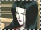
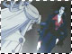

I n f o r m a t i o n /sisters.html
Hinoto has a younger sister named Kanoe, her only blood relative. Kanoe does not possess the ability to dream about the future, however, she does have the ability to enter anyone's dreams and see their dreams from there. Kanoe has always despised Hinoto, for she felt that Hinoto was treated specially because of her dreamgazing abilities that Kanoe lacks. The more Hinoto suffers from her inability to change the future, the more delighted Kanoe is. She loves to see her older sister suffer like so. Kanoe has entered Hinoto's dreams frequently and saw the destruction of the world. She gathered all of the Dragons of Earth and plans to make Hinoto's dream a reality, because it would make Hinoto suffer.
There is no love between the two sisters. Kanoe despises Hinoto, and Hinoto seems to only tolerate Kanoe. Since the beginning, Kanoe's motives have been negative, to rid the world of humans, to change the world. Kanoe believes that she's doing Hinoto a favor, as Hinoto will continue to remain as a Dreamgazer if the world is destroyed. It seems that Hinoto cannot sense when Kanoe peers into her dreams. Kanoe comes in and out of Hinoto's dreams as she pleases, and only reveals herself when she chooses to. Hinoto does have the power to banish Kanoe from her dream if she sees her though. When Kanoe chooses to appear, she always speaks to Hinoto with a tint of disgust. She thrives off of seeing Hinoto in despair when she taunts her older sister.
Not only do the two sisters differ internally, their outer appearances also contrast. Kanoe is portrayed to be slutty, wearing revealing outfits and sleeping around. Hinoto is soft-spoken and doubtful, while Kanoe is intimidating and speaks with confidence, never faltering.
The only time Kanoe wavers is when Hinoto kills herself. Kanoe can be seen crying in bed and asking "Hinoto...why..." Whether Kanoe is grieving over her only sister's death or the inability to see her own dream come true is up for discussion. Personally, I interpreted it as her inability to see her dream come true. Kanoe has never once shown a hint of remorse or sympathy towards her older sister, so it's hard to imagine why she would start now. She has every reason to grieve in regard to Hinoto leaving the future undecided. To Kanoe, there was only one future, world destruction, until Hinoto's death. With her death, the future remains unsettled, and Kanoe might not be able to see the change in the world she so desired. Kanoe also wanted Hinoto to suffer as she watched the events unfold, helpless to do anything. Now Hinoto no longer suffers from her horrific dreams. So naturally, Kanoe has failed.
x
clear x